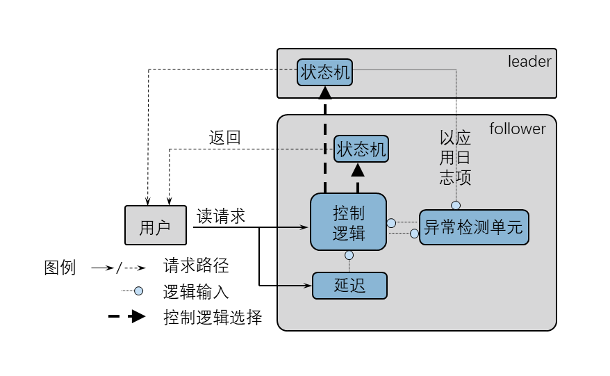
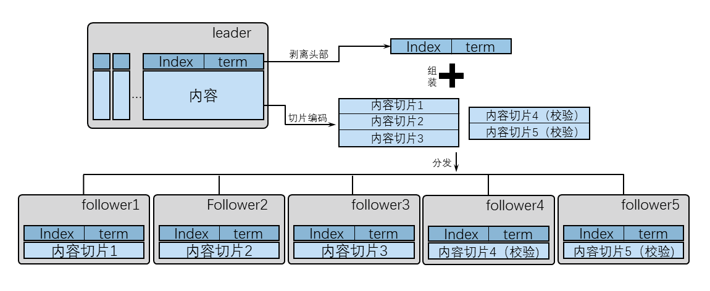
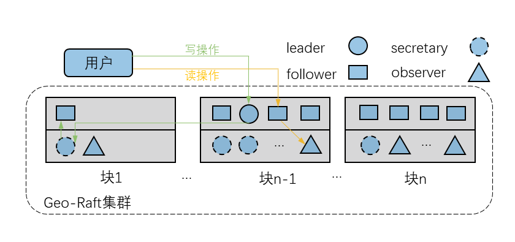
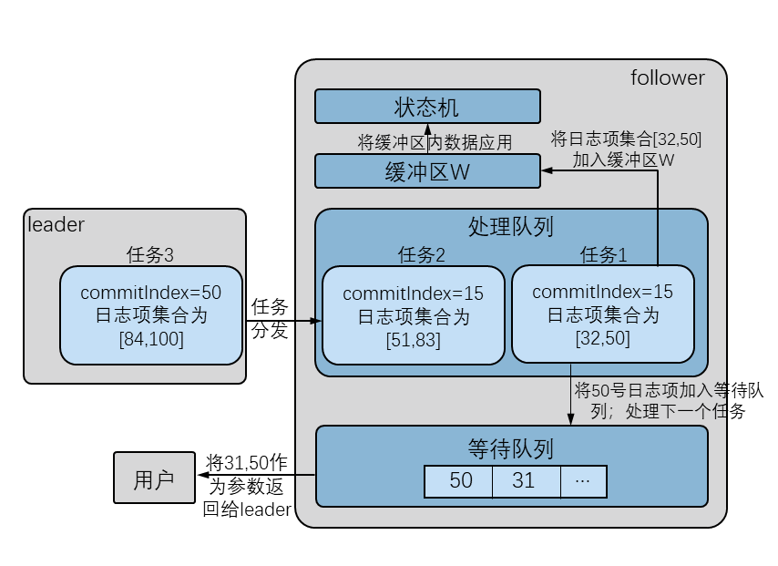

序言
正如标题所说，本系列将介绍Raft的一些研究成果，本系列内容在2020年就已经完成。当时笔者正在读研究生，主要做一些区块链应用。但是自己还是有发文章的想法，于是我将目光投向共识算法。首先接触到的当然是Paxos算法，花了大概一个月左右将Lamport的那篇《The part-time parliament》[1]看了一遍，大师的论文功力的确深厚，不仅文字易懂并且连文末的数学推导也比我看过的其他大部分论文中的好懂。虽然网络上有很多Paxos算法的描述，但是我认为大部分一两页纸的描述并不能反应Paxos算法的精髓只能作为辅助参考。如果想从Paxos算法开始自己共识算法之旅的话非常推荐从该论文入手。
看完论文后我的确能大概理解Paxos算法，但我感觉自己可能无法在短时间内对该算法进行什么后续研究。首先是Paxos算法不易理解描述较为抽象，如何达成共识的流程并不清晰，隐藏在整个算法流程中。其次因此所带来的问题是代码描述可能更考量工程人员的代码能力（Lamport本人的实现也是在之后的几篇论文中才有所提及）。因此我继续寻找目标，而我第二个目标就是Raft算法。
Raft(木筏)当年还有个很火的同名游戏。但从算法本身来说，吸引到我的就是论文作者所强调的易理解性[2]，估计一年时间也能有些成果（实际上除了一篇综述草稿和一些思路外并没有什么实际产出:)）。 本文内容大多出自那篇综述草稿，首先介绍共识算法的一些基础知识如复制状态机等，以及经典的Raft算法；接着主要从“从节点读”操作、降低集群负载、提高集群可拓展性以及加速日志复制四个方向介绍相关改进研究进展。
当然还有一些共识算法包括Viewstamped Replication(VR)算法，并没有被广泛使用，主要应用在Harp文件系统中。VR算法与Raft算法有一定相似性，值得注意的是VR算法中的轮询leader选举机制且所有节点均可积极发送消息，并支持在没有非易失性存储的情况下运行。Zab(Zookeeper Atomic Broadcast)是更晚出现的共识算法，应用在当今最流行的开源共识系统Apache Zookeeper协调服务中．Raft算法中集群成员更替的流程与Zab中所使用的较为相似．在Raft算法的设计中参考了上文所涉及算法的一些特性，在表1中列举了这些算法之间的关键异同点。这些算法将不会进行具体展开。
| 消息种类 | 日志连续性 | 有无独立提交阶段 | 选举触发条件 | 新任期状态确定 | |
|---|---|---|---|---|---|
| Multi-Paxos | 允许非连续 | 有 | 双向 | 领导者确认日志恢复结束点后，将状态同步到日志恢复结束点的状态 | |
| Zab | 10 | 要求日志具有连续性 | |||
| VR | 10 | 隐含在下一个请求中 | 单向超时 | 在半数以上副本进程日志序列中，选一个最新的日志作为初始状态 | |
| Raft | 4 | 新领导者自身状态 |
相关知识
该部分主要介绍共识达成的条件、quorum这个概念以及复制状态机。
共识达成的条件
对于共识达成的条件在网络上有相当多的讨论，可能无法得出统一结论，这里的内容来自于Ongaro D介绍Raft算法的的博士论文《Consensus: Bridging theory and practice》2。主要包含三个条件一致性、合法性以及可终结性：
一致性(agreement)：所有正常的节点将得出相同的值;
合法性(validity)：被决定的值由一个正常的节点提出;
可终结性(termination)：所有正常节点最终将决定一个值。
复制状态机
共识算法通常在复制状态机的背景中提出，如图1所示，复制状态机通常包括共识模型、日志以及状态机。用户向复制状态机发送指令，指令被传递给共识模型(步骤1)，当共识模型决定将该命令在复制状态机集群内达成共识后将命令加入(apply)日志，并与其他复制状态机内的共识模型进行交互，将命令复制到其他日志中并保证命令在日志中排列顺序相同(步骤2)。状态机按日志顺序依次执行(commit)命令(步骤3)并将结果返回给用户(步骤4)。当初始状态一致，命令以及执行顺序一致，所有状态机最后的状态也将一致，从而保证集群内部的一致性。
复制状态机这个概念比较抽象，对于同样状态的状态机，收到相同的指令理论上当然应该还会到达另一个相同状态。我认为了解它可以更好理解共识算法。数据库的一条插入语句可以被认为数据库集群中需要达成的共识，准备秋招背八股时发现 MySQL，Redis 等数据库的集群实现有了这个概念会更好理解。
原始Raft算法
Raft算法根据共识模型节点被定义为以下三种角色之一：
- follower(从者)：被动节点，只对接收到的消息进行回复，不主动发起任何通信；
- candidate(候选者)：主动节点，发起选举，尝试成为leader；
- leader(领导者)：主动节点，在任期内管理整个集群，处理来自用户的命令(当用户向follower发出请求，follower将请求重定向给leader)，负责将日志项复制到其他节点的日志中。
Raft算法如复制状态机所述对日志进行管理，日志结构如图2所示，由日志项构成，每个日志项包含一条状态机命令，并包含每个任期的标识(term)以及确定该日志项在日志中位置的索引(index)。Raft算法中时间被划分为的长度不等的 term，term 由整数编号并单调增加。每个节点维持日志中最新日志项所处的 term(current term) 以及最新应用的日志项的 index(commit index)。
Raft实现中集群节点采用远程过程调用(RPC，Remote Procedure Call)进行通信，RequestVote RPCs由candidate在选举中发起收集投票，follower节点收到后回复同意或拒绝；AppendEntries RPCs由leader发起在需要达成共识时向集群中其他节点复制日志项，并定时发送空AppendEntries消息作为心跳消息保持自己的领导地位，当follower收到有效的AppendEntries RPCs后将回复代表接收成功的消息，而收到不匹配的AppendEntries将回复拒绝接收。
集群中节点日志须与leader节点日志保持一致。leader节点也负责集群中日志项的复制工作。leader根据用户命令生成相应日志项，将其加入AppendEntries并广播希望将该日志项复制到各节点中，当leader对于该日志项的复制请求收到了来自集群中半数以上节点复制成功的回复后将该日志项应用到状态机中，并将结果返回给用户。在下一个AppendEntries中通知其他节点更新 commit index，将该日志项以及之前所有未应用日志项应用到状态机中。而 follower 节点根据 term 和 index 接受与本地日志所匹配的日志项保证日志中日志项顺序。
节点状态的转移如图3所示。如果 follower 在计时器超时之前没有收到任何有效消息将转变为 candidate 并开始选举，candidate 在选举开始时自增本地 term 并广播 RequestVote，当 follower 之前没有收到过包含大于等于此 term 的其他 RequestVote，将投同意票。candidate 在一个 term 中获得大部分节点的选票后成为新 leader，发送心跳消息表明自己的领导地位，原 leader 的任期也随之结束，其他 candidate 也将回到 follower 状态。若 candidate 在计时器超时之前没有收到足够多选票且没有收到其他节点的心跳消息则自增 term 开始新一轮选举。
还有一些研究基于算法流程总结算法特性，从而证明Raft算法的安全性，相关工作也有的是通过TLA+语言完成的，这部分研究我没有探究，看起来比较复杂[3][4][5][6]。还有研究通过马尔科夫链模型对 Raft 算法进行建模[7]，从而进行相关探究。为了贴近事实并保证模型的简洁，假设集群中有N个节点且N为奇数，通信延时远远小于选举超时界限，而节点失效的时长远远大于选举超时界限．因此节点只会因为网络丢包在时间界限内无法接收到消息。follower 维持选举计数器，在规定时间界限内没有收到 leader 发送的心跳消息则计数器减1，当计数器值置零即连续多次未收到心跳消息后，follower 转换为 candidate 开始选举。最终计算出转移矩阵并得出一系列结论，包括集群分裂概率、平均日志复制数、follower 接收心跳消息的数量以及选举所耗时间等。通过数学模型对 Raft 算法状态转移进行描述，加深对 Raft 算法理解。
quorum与算法活性
传统的共识算法需要在无拜占庭行为的异步系统中满足一致性和合法性，当失效的节点少于某阈值 (quorum number) 时可终结性也需要被满足，这个为了在集群中达成共识所需要的最少节点的集合称为 quorum，反过来说可以容忍的最多节点失效数成为算法活性。Multi-Paxos、VR 算法以及 Raft 算法在 (2f+1) 个节点的集群中 quorum 的大小为 (f+1) ，即可以容忍 f 个节点同时失效(此时算法活性为 f )。由于任何两个 quorum 之间都有重叠节点，对某个 quorum 进行的操作在未来至少有一个 quorum 中有所标记，从而保证达成的共识不会被遗忘。同理若集群中节点数小于 qurorum 则集群崩溃。
用博主自己的话来说，quorum 在很多关于共识算法的文章中都有出现，但是很难用中文去翻译，这个概念主要是指共识算法中达成一个共识最少需要保持统一的最小集群中节点的数量。如 Raft 算法中若集群总结点数为 (*2f+1)*那么只有当 (f+1) 个节点都将某条数据进行记录，这条记录才能被成为该集群中的共识。从而还会引出算法活性这个概念，算法活性就是该集群能容忍同时下线节点的数量，Raft 算法中为 f，当 f 个节点下线后，由于 quorum 为 (f+1)，所以任何之前达成过的共识都会在剩下正常的节点中有记录。当然如果同时下线的节点数超过 f 时，该集群就已经没有意义了。
"从节点读"相关研究
Raft算法的存储实现中状态机以数据库的形式存在，实现在分布式系统中提供冗余存储。“写命令”向节点数据库中增删改数据，由 leader 负责将命令在集群内其他节点中执行。而“读命令”读取数据库内容，只需与 leader 节点中数据库进行交互即可。因此 leader 节点所承担的负载远远大于其他节点。由于大多数 follower 的状态只与 leader 有很小的延迟，从 follower 节点中读取数据有大概率和 leader 中一致。因此很多实现中让 follower 节点处理读命令，分担 leader 节点的负担。但 leader 对于日志项的应用早于 follower，在 leader 已完成“写命令”而 follower 还未完成这段时间内通过 leader 进行读操作可以获得正确结果。而读取 follower 中数据库的状态可能出现数据过期，数据缺失等异常。准备秋招时发现这部分研究与 Redis 主从复制以及相应的一致性问题有一定关联。
“quorum读”方法
这种读取方法基于 quorum，原文是将 Raft 算法用于 CockroachDB 的应用研究[8]，主要分为普通 quorum 读和强一致性 quorum 读，名为 quorum 是因为总体上需要 quorum 个从节点反馈结果，有些内容与 MySQL 的乐观锁有些相似，但这是在集群环境中的问题。
普通"quorum读"
当 leader 节点收到用户的读请求后，将请求转发给集群中大部分 follower 节点。节点收到请求后，读取并返回与“键”相对应“值”，并附上该键值对最后一次稳定的时间戳，表示状态机对该键值对最后一次修改的时间。leader 节点选择时间戳最近的回复，将其中的值返回给用户。虽然在在这种读方法中也可能出现上文提到的未知错误，但是由于得到的值是集群中大部分 follower 节点状态中的最新状态，过期的可能性相对较小．
强一致性"quorum读"
为了弥补普通 quorum 读中的问题，强一致性 quorum 读利用 CockroachDB 的读写特性。当节点接收到读请求与写操作发生冲突则仅返回当时的时间戳，只有与写操作不冲突时才返回值以及时间戳。如果网关节点收到的时间戳最靠前的回复中只有时间戳，则至少说明该读操作与写操作有冲突，本次查询失败，还可以使用退避算法继续进行查询。
反馈一致性模型
在强一致性模型的基础上将“从节点读”中的异常率当成模型参数，用户可以将自定的错误率作为参数输入模型中。基于反馈一致性 Philip 等提出了 Reflective Consul[9],其中利用反馈一致性来动态控制因为从节点读而产生异常的概率从而更好的平衡负载与效率。虽然在读操作过程中可能出现各种各样的异常情况，但读取到过期数据这种异常出现的频率最高，因此那篇文献中主要考虑这种异常。
模型如图4所示，通过控制逻辑处理用户请求，将请求在本地处理或发送给 leader，返回结果中附有请求完成时的时间戳，该键值也被保存在异常检测单元。控制逻辑通过读延迟统计与异常率决定当前请求分发的对象，异常率统计由异常检测单元完成，单元检测每个键值对的每一次读请求。对于每个键有两个输入:
- 最新一次读操作的记录，包含读出的值 $v_r$ 以及读取的时间 $t_r$；
- 包含相应数据的以应用日志项，其中包括应用到状态机中的值 $v_c$ 以及应用的时间 $t_c$。
一个读异常可以被定义为: $$ v_r \ne v_c \land t_c \lt t_r $$
通过控制逻辑用户灵活设定读操作的规定延时和异常率，当延时较低则可以通过将更多读请求交给 leader 来获得更低的异常率，而效率无法满足时则牺牲可靠性提高效率，从而更灵活的达到规定的性能。

降低集群负载
Raft 算法为了在 N=(2f+1) 个节点中容忍 f 个节点的失效，每个日志项至少需要在集群中 （*f+1）*个节点中存放．集群规模和数据规模增大时，这部分的花费将是集群负载提高的一个主要原因。因此不少研究尝试降低集群负载。
基于纠删码的CRaft算法
在CRaft算法[10]中，使用了一种经典的纠删码--里德所罗门编码(Reed-Solomon codes)，RS-code可以从原数据中生成 k 个数据块和 m 个校验块，只要通过这 (k+m) 个块中的 k 个块就可以恢复出原始数据。需要注意的是如果单纯的将 follwer 中的日志实体都替换为编码块，则无法保证和原 Raft 算法拥有相同的活性。为了能和原始 Raft 算法保持相同的活性 CRaft 中使用了纠删码复制与原始数据复制相结合的方式．在此假设集群中有 N=(2f+1) 个节点，算法需要能够容忍 f 个节点的失效。
纠删码复制使用 (k,m)-RS code*(k+m=N)* 对原日志项进行处理，如图5所示 index 和 term 应该提前剥离出并添加在处理过的 (f+k) 个数据块的头部。Leader 将数据块分别发给对应的 follower，当收到至少 (f+k) 个回复后，leader 将该日志实体应用(暗示当活节点数少于 (f+k) 时无法使用纠删码复制)，因为在 (f+1) 个节点中至少有 k 个节点拥有该日志项的数据块，所以任何拥有编码后数据块的 follower 可以正常发起选举并通过其他节点恢复出完整日志项。而当没有 (f+k) 个节点在线时纠删码复制无法完成，leader 节点需要使用 Raft 算法中使用的日志项复制方式。

值得注意的是，新 leader 选出后需要先标记出日志中未应用的日志项编码块，并向 follower 节点广播请求得到相应日志项编码块，对于每个日志项如果收到 k 个编码块或一个完整日志项即可恢复，等待所有未应用日志项都恢复成完整日志项后再按顺序应用，当有日志项无法恢复时将其和之后所有日志项(即使是完全的)从日志中删除。恢复或删除完成后额外步骤完成，显然 leader 的额外步骤进行了日志项删除，破坏了Raft算法中的日志只增原则，因此在10中还证明这种破坏并不会影响安全性。
CRaft算法通过 (k,m)-RS code 编码日志项，当使用纠删码复制时网络和存储负载都降为原来的 1/k，因此与原 Raft 相比可以获得更优的写时延和吞吐量，且拥有与 Raft 算法同等的活性．但由于需要恢复数据块，CRaft 读操作延迟大于 Raft，但重复读取同一数据可以让延迟相对降低．
添加轻量化节点
Pirogue算法
Pirogue算法[11]根据集群中存活节点数以及节点状态，动态的维持quorum。通过“动态投票”以及其改进“动态线性投票”的方法，让quroum随着集群中现存节点数量伸缩变化。该方法可以在 N=(f+2) 个节点容忍 f 个节点失效．并加入仅包含最有限数据的轻量化节点见证者(witness)，这种节点仅参与选举投票、日志复制过程而不成为 candidate 。使用观察者节点替换一些完全节点能使集群获得与原先相近的可用性。
Suspend节点
由于集群中只需要半数以上的节点在线就可以运行，基于Pirogue算法，Nakagawa等向Raft算法中引入suspend节点[12]。根据节点失效概率的经验选出部分节点作为suspend节点，susupend节点开始处于挂起状态，leader通过心跳消息统计现存节点数，当集群内现存节点数量过少无法达成共识，leader计算所需suspend节点数，选择相应suspend节点发送苏醒信号，同步日志状态，从而开始日志复制步骤。
提高集群可拓展性
KRaft算法
随着Raft算法的广泛使用，更大的集群规模是可以预见的发展方向。虽然Raft算法使用随机选举超时机制，但节点数量过多时仍然可能出现投票分散的情况。引入Kademlia协议[13]，修改leader选举和日志复制流程，可以解决当节点数量较多时leader选举效率低下的问题。
Kademlia协议是一种基于异或运算的分布式哈希表(DHT)，可以高效的实现分布式存储与路由．Kademlia协议中节点通过维持路由表(K桶)来维持与其他节点之间的联系， K桶在网络层动态维持，因此增加节点并不会对集群造成太多负担。
KRaft算法在集群中维持一个以leader为中心的K桶称为“表”，通过与leader的最后联系的时间顺序与id距离为依据，不断更新K桶中节点。并保证leader节点失效后K桶中节点日志状态相同．当leader失效后K桶中节点均可转变为candidate，candidate根据当前时间生成一个随机数I(时间戳+随机数)，并在I时刻之后开始选举。产生最小随机数的candidate最有可能被选为新的leader．新leader出现后以其为中心更新K桶(表)。
由于K桶的更新可以保证在线时间较长的节点有更大的可能性保持在K桶中。所以KRaft算法选出的leader节点在一定程度上更加稳定。采用随机数I的机制，也不会完全破坏选举的随机性。动态设置适合集群节点数量的K桶规模，保证了在庞大节点数量下不完全破坏选举稳定性和随机性并大大提升选举效率。而且K桶中节点积极更新，基于Kademlia协议的思想，使桶中节点承担部分日志项复制的职责，来减轻leader节点的负载。当leader收到所有表中节点的AppendEntries回复后这些节点就有权力去传播当前日志项。从而使日志复制的过程变为多节点并行，提高日志复制速率．在文中1332个节点的测试中，leader选举时常缩短短了67%，吞吐量提高了41%．
Multi-Raft
在Multi-Raft[14]中通过多组Raft集群，将用户的请求分给不同的集群。通过两阶段提交在集群之间保持强一致性。虽然Multi-Raft可以提高吞吐量，但是每次扩容都会多消耗一倍的资源。在文献[15]提出的Geo-Raft中通过将集群分块来提高集群规模。
Geo-Raft算法中还增添了 secretaries(秘书)节点与 observers(观察者)节点。秘书节点协助leader分担的日志复制任务。观察者节点服务 follower 帮助其处理读请求 如图6所示，Geo-Raft将集群分为 n 子块，不同子块中秘书节点和观察者节点数量不一。唯一的 leader 通过秘书节点向其他块中的 follower 复制日志项。而读请求被分配给 follower 节点或观察者节点。通过上述机制 leader 节点可以管理数量众多的 follower 节点。秘书节点和观察者节点都属于无状态节点，仅分担负载可以随意替换，因此对算法安全性不造成影响。

值得一提的是，云计算市场的激烈竞争，某些容易失效的云计算资源如亚马逊的AWS EC2云服务器的价格是特定按需服务器的十分之一。在Geo-Raft算法中 leader 节点和 follower 节点选用按需配置的稳定服务器，而秘书节点与观察者节点则根据市场价格选择相对便宜且稳定性不高的云服务器。因为扩展方式以及资源选用的灵活性，在实现中Geo-Raft总成本为Mulit-Raft的15%。且连续提供6个月的键值对存储服务在谷歌集群追踪测试(Google cluster trace[46])中不出现数据丢失或冲突。
加速日志复制
在Raft算法具体实现中，日志复制的时延是影响系统性能的一大因素，硬盘的I/O时间是日志复制快慢的主要影响因子。在Batching优化[16]的基础上通过优化日志复制过程中的数据存储策略提出了FRaft算法。
FRaft算法
如图7所示，通过 Batching 优化，leader 将多个日志项作为一个任务打包发送给 follower。follower 通过处理队列来接受 leader 发出的任务，首先将头部的任务加入到特殊的缓冲区 W 中，其次将这个任务中的最后一个日志项的 index 压入等待队列中，并将 W 中的日志序列加入硬盘中并应用，最后将涉及到的等待队列中的 index 回复 leader．通过缓冲区 W 一次处理多个日志序列减少了处理队列中的任务的等待时间并降低了硬盘 I/O次 数。然而这些操作可能导致在共识还没达成的情况下，某些日志实体在 follower 中已经应用的情况。将已应用日志按顺序加入发布池(pubilshpool)。根据 leader 发送的后续 AppendEntries 在共识达成后将日志项释放，从而可以根据发布池中数据对以应用日志项进行撤销．测试证明 FRaft 在吞吐量、节点恢复时间、工作负载等指标上都有提升，且并不会因为强一致性与可用性损失太多性能。

还有Guo等提出了基于特殊标记日志实体的日志恢复算法[17]．通过特殊标记将需要恢复的节点中的日志与leader中不一致部分整体删除，不需要逐个日志项进行检测，减少交互次数。提高日志复制效率。
-
Leslie L. The part-time parliament[J]. ACM Transactions on Computer Systems, 1998, 16(2): 133-169.
-
Ongaro D. Consensus: Bridging theory and practice[D]. Stanford University, 2014. ↩︎
-
Ongaro D, Ousterhout J. In search of an understandable consensus algorithm[C]//2014 USENIX Annual Technical Conference (USENIX ATC’ 14). Berkeley, CA: USENIX Association, 2014: 305-319.
-
Yu G, Hua L, Yuanping L, et al. Using TLA+ to Specify Leader Election of Raft Algorithm with Consideration of Leadership Transfer in Multiple Controllers[C]//2019 IEEE 19th International Conference on Software Quality, Reliability and Security Companion (QRS-C). Piscataway, NJ: IEEE, 2019: 219-226.
-
Lincoln C R. Specifying Systems: The TLA+ Language and Tools for Hardware and Software Engineers[J]. Software Quality Professional, 2003, 5(4): 43.
-
Cousineau D, Doligez D, Lamport L, et al. TLA+ proofs[C]//International Symposium on Formal Methods. Heidelberg, Berlin, Germany: Springer, 2012: 147-154.
-
Huang D, Ma X, Zhang S. Performance analysis of the raft consensus algorithm for private blockchains[J]. IEEE Transactions on Systems, Man, and Cybernetics: Systems, 2019, 50(1): 172-181.
-
Arora V, Mittal T, Agrawal D, et al. Leader or majority: Why have one when you can have both? improving read scalability in raft-like consensus protocols[C]//9th USENIX Workshop on Hot Topics in Cloud Computing (HotCloud 17). Berkeley, CA: USENIX Association, 2017[2020.12.25]. https://www.usenix.org/conference/hotcloud17/program/presentation/arora
-
Dexter P, Sendir B, Chiu K. Detecting and Reacting to Anomalies in Relaxed Uses of Raft[C]//2020 20th IEEE/ACM International Symposium on Cluster, Cloud and Internet Computing (CCGRID). Piscataway, NJ: IEEE, 2020: 659-668.
-
Wang Z, Li T, Wang H, et al. CRaft: An Erasure-coding-supported Version of Raft for Reducing Storage Cost and Network Cost[C]//18th USENIX Conference on File and Storage Technologies (FAST’ 20). Berkeley, CA: USENIX Association, 2020: 297-308. ↩︎
-
Pâris J F, Long D D E. Pirogue, a lighter dynamic version of the Raft distributed consensus algorithm[C]//2015 IEEE 34th International Performance Computing and Communications Conference (IPCCC). Piscataway, NJ: IEEE, 2015: 1-8.
-
Nakagawa T, Hayashibara N. Energy efficient raft consensus algorithm[C]//International Conference on Network-Based Information Systems. Cham, Switzerland: Springer, 2017: 719-727.
-
Maymounkov P, Mazieres D. Kademlia: A peer-to-peer information system based on the xor metric[C]//International Workshop on Peer-to-Peer Systems. Heidelberg, Berlin, Germany: Springer, 2002: 53-65. ↩︎
-
Howard H, Schwarzkopf M, Madhavapeddy A, et al. Raft refloated: Do we have consensus?[J]. ACM SIGOPS Operating Systems Review, 2015, 49(1): 12-21.
-
Xu Z, Stewart C, Huang J. Elastic, geo-distributed RAFT[C]//2019 IEEE/ACM 27th International Symposium on Quality of Service (IWQoS). Piscataway, NJ: IEEE, 2019: 1-9.
-
Friedman R, Van Renesse R. Packing messages as a tool for boosting the performance of total ordering protocols[C]//Proceedings. The Sixth IEEE International Symposium on High Performance Distributed Computing. NJ: IEEE, 1997: 233-242.
-
Guo J, Wang J, Cai P, et al. Fast follower recovery for state machine replication[C]//Asia-Pacific Web (APWeb) and Web-Age Information Management (WAIM) Joint Conference on Web and Big Data. Cham, Switzerland: Springer, 2017: 311-319.